██████╗ ██████╗ ███╗ ███╗██████╗ ██████╗ ██████╗ ██╔════╝ ██╔═══██╗████╗ ████║██╔══██╗██╔══██╗██╔═══██╗ ██║ ███╗██║ ██║██╔████╔██║██████╔╝██████╔╝██║ ██║ ██║ ██║██║ ██║██║╚██╔╝██║██╔══██╗██╔══██╗██║ ██║ ╚██████╔╝╚██████╔╝██║ ╚═╝ ██║██████╔╝██║ ██║╚██████╔╝ ╚═════╝ ╚═════╝ ╚═╝ ╚═╝╚═════╝ ╚═╝ ╚═╝ ╚═════╝
Index
- 1 — What is Gombro?
- 2 — First steps
- 3 — The Editor
- 3.1 Formatting bar
- 3.2 Context menu
- 3.3 Paragraph mode and sentence mode
- 3.4 Zen mode
- 3.5 Layout — three panels
- 3.6 Sheet width
- 3.7 Text scale
- 3.8 Keyboard reference
- 4 — Command terminal ★
- 5 — The Explorer
- 6 — The Diary
- 6.1 How it works
- 7 — Dreamcatcher
- 7.1 How it works
- 7.2 Feeding the Dreamcatcher from notes
- 7.3 Compiling dreams
- 7.4 Reference
- 8 — Project notes
- 9 — Hourly writing plan
- 10 — Borges Algebra ★
- 10.1 Insert a pending fragment
- 10.2 Create a variant from a selection
- 10.3 Add sub-variants
- 10.4 Resolve a branch
- 10.5 Export variants to DOCX
- 10.6 Syntax
- 10.7 The philosophy
- 11 — Paths (narrative labyrinths) ★
- 11.1 Create a path
- 11.2 Paths in the Explorer
- 11.3 Open a path
- 11.4 The origin banner
- 11.5 Compile — Labyrinth version
- 11.6 Reference
- 12 — Shuffle and cut-up ★
- 12.1 When to use Shuffle
- 13 — Paragraph versions
- 14 — Doubt marks
- 15 — Tables
- 15.1 Create a table
- 15.2 Edit a table
- 15.3 Imported tables
- 15.4 When compiling
- 15.5 Reference
PART IV — Exploring the manuscript
- 16 — Search and Collections ★
- 16.1 Search in sentences
- 16.2 Collections
- 17 — Hashtags and filters
- 17.1 Hashtag filter in the Explorer
- 17.2 Reference
- 18 — A graph view of my book ★
- 18.1 How to read the graph
- 18.2 Filter by keyword
- 18.3 Colors and halves: several keywords at once
- 18.4 Combine keywords: AND / OR
- 18.5 Paragraph orbit
- 18.6 Underlining in the Editor
- 18.7 Graph controls
- 19 — Schrödinger mode ★
- 19.1 What is text in a quantum state?
- 19.2 How to strike out text
- 19.3 The ⚛ Schrödinger button
- 19.4 The Schrödinger list
- 19.5 Schrödinger and compiling
- 19.6 The complete flow
- 19.7 Reference
- 20 — Extractive summary ★
- 20.1 Project view — the book at a glance
- 20.2 Summary of an individual session
- 20.3 The two algorithms
- 20.4 Hashtags as signals
- 20.5 Reference
- 21 — Kerouac mode ★
- 21.1 How to activate it
- 21.2 What it does
- 21.3 Sync with the Explorer
- 21.4 Saving in Kerouac Mode
- 21.5 Reference
- 22 — Session indicators
- 22.1 How to add a note to a session
- 22.2 The indicator
- 22.3 Reference
- 23 — Sync notebooks from other devices
- 23.1 How the connection works
- 23.2 A typical flow
- 23.3 The Obsidian Notebook panel
- 23.4 Multiple projects
- 23.5 Reference
- 24 — Insert image
- 24.1 How to insert
- 24.2 Resizing
- 24.3 When compiling
- 24.4 Reference
PART VI — Compile (export to md/doc)
- 25 — Import and export
- 25.1 Import md and doc documents
- 25.2 Export md and doc
- 26 — Compile Modal ★
- 26.1 Available parts
- 26.2 Format
- 26.3 Reference
- 26.4 Where files are saved
- 26.5 Windows blocks saving to Documents
- 27 — Backup and recovery
- 27.1 How it works
- 27.2 Where they are saved
- 27.3 Change the folder
- 27.4 Backup rotation
- 27.5 Restore a backup
- 27.6 Command reference
- 27.7 Keyboard shortcuts
- Recommended workflow
- 27.8 Phase 1 — Open the instrument
- 27.9 Phase 2 — Let chance work
- 27.10 Phase 3 — Tag and map
- 27.11 Phase 4 — Search and collect
- 27.12 Phase 5 — Read the whole manuscript
- 27.13 Phase 6 — Export
- Star features ★
- About me, Gombro's fabulist
- Alphabetical index
How to use Gombro
Editor for {fragile, immature and inventive souls|writing your novel from word zero to the final manuscript.|writing your emptiness into words.} This is an example of how Gombro is used, with its options for correcting a text.
Human-blood-traction writing
A text produced by AI is made of plastic, binary botox dripping, crumbling its artificial lips. Gombro is an editor of human texts.
Gombro is for writing a novel and is centered on the manuscript.
Gombro is weak for academic work (I suggest Scrivener). It also has no spell-checker, let alone a grammar checker.
The most interesting part:
The philosophy of Gombro
- First you create the Project of the work: a novel, a book of short stories, poetry.
- The first session opens automatically and we begin the fragility of breaking the silence of the blank page.
- The next day we start a new session, and the next, another session… and so on.
- The center of Gombro is the paragraph. Everything happens there.
- There is an option to make the sentence the center of gravity.
- Gombro has no character sheets, plots, story arcs, hero's journeys, superheroes, sagas. Because we don't believe literature has anything to do with those horrible things from Dabble and Atticus.
- It's all going from paragraph to paragraph, without the safety nets of puerile structures.
PART I — Getting started
1 — What is Gombro?
Gombro is an editor for writing, editing and planning a novel.
An editor conceived for the {play|fire|work} of the manuscript.
Words separated by
|inside braces, like{play|work ad honorem}, are alternatives of the Borges Algebra (see Chapter 10): when you compile, each group is shown stacked so you can choose the final version.
There is no residue of AI in Gombro; you have to face your own (human) naked writing — the one you babbled (dada) as a months-old infant, the one you inherited from parents, grandparents, ancestors, sapiens, erectus, all the way back to an unknown origin.
There is no "open new file" as in Word. In Gombro you open a new session and go out to meet the new, the inventive, the sudden idea.
Gombro is a station of play and work.
It's a game, {fun|entertaining}, that we do for the joy of it. The scholastics erased comedy as a literary genre (though I'm not sure, nor do I quite know who the scholastics are), and in any case nobody speaks of play as the hidden literary genre — a game played at both ends: reader (beholder) and writer. Few (me) say: I write because I have fun (Melville says it through Ishmael in the first paragraph of Moby Dick).
Writing is in itself an immature activity, {juvenile|childish|puerile}, a game with oneself. Gombro only aims to recover {that|the} poetic feeling of writing. The truth is I find it boring to write from {solemnity|immortality|horroris causa}. In the end Roberto Bolaño is right: of us, of the human species, of the earth, of the solar system, of the Milky Way, not even the murmur of a tear falling into the void of the night will remain.
The women and men who would have used Gombro
Kafka would have used it; it would have let him type without making noise and waking his father in the next room.
Jacques Vaché would have found it contrived, and would have mocked Breton, who would surely use it.
My friend Raúl Silanes, out of stubborn friendship, would have used it — especially Kerouac mode, which lets you write as if on a teletype roll (one day he came to the café — we met on Saturday mornings at a bar on Colón street — telling us that the night before he had written a 140-page novel).
Kerouac would surely have used it for his novel On the Road in Kerouac and Zen mode, but he died in 1968. And Gombrowicz? I don't know.
Joyce would have used it for Finnegans Wake (I can't imagine how) and Julio Cortázar, in Hopscotch, the Paths tool for that coming and going of his novel.
Borges, in The Aleph, inspired the tool for editing with algebraic braces.
Borges, algebraic, in Gombro
Something similar to what Pierre Menard did with Don Quixote, I did with the manuscript of The Aleph: with the add-variants and sub-variants tool we revived the Borges algebra. I have left this very text by the master inside Gombro's games, with the entertainment of guessing which variant and sub-variant remained — and so that you can make your own. In Chapter 10 — Borges Algebra it is explained how to add variants and sub-variants.
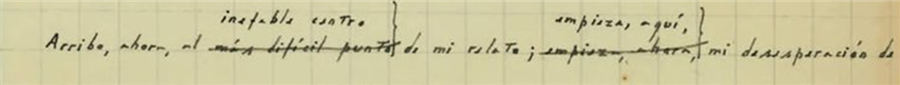
I arrive now at the ineffable center of my tale; {here begins|now begins} my despair as a writer.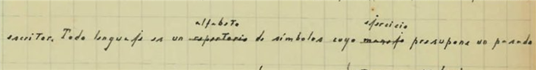
All language is an {alphabet|repertoire} of symbols whose {exercise|use} presupposes a past shared by the interlocutors;
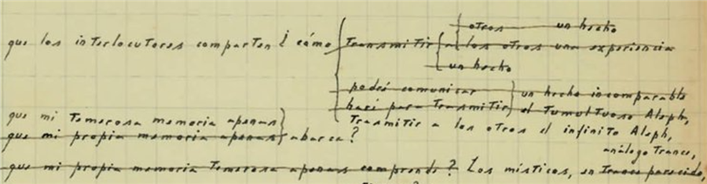
how can I {transmit to others the infinite Aleph|{convey|the tumultuous Aleph|an incomparable fact}|{communicate to others|an incomparable fact|the tumultuous Aleph}|{transmit to|others an experience|others a fact}|transmit a fact}, {that my own timorous memory can scarcely|that my timorous memory can scarcely|that my own timorous memory scarcely comprehends?} encompass?The mystics, in {an analogous trance|a similar trance}, lavish emblems: to signify the divinity, a Persian speaks of a bird that somehow is all birds…
Here is the complete handwritten text of what we emulate with Gombro:
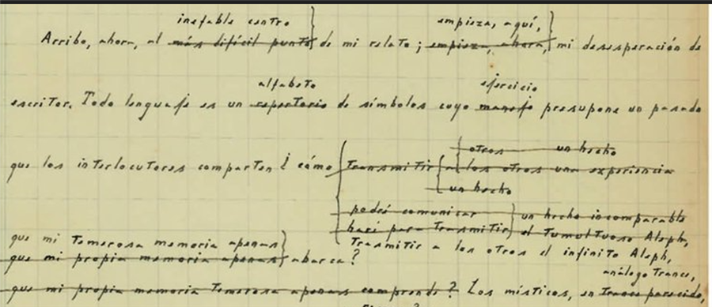
Do you know which option Borges chose? Here is the solution (did you guess right?): I arrive now at the ineffable center of my tale; here begins my despair as a writer. All language is an alphabet of symbols whose exercise presupposes a past shared by the interlocutors; how can I transmit to others the infinite Aleph, which my timorous memory can scarcely encompass? The mystics, in an analogous trance, lavish emblems: to signify the divinity, a Persian speaks of a bird that somehow is all birds; Alanus de Insulis, of a sphere whose center is everywhere and whose circumference is nowhere; Ezekiel, of an angel with four faces who at one and the same time turns to the East and the West, to the North and the South. (Not in vain do I recall these inconceivable analogies; they bear some relation to the Aleph.) Perhaps the gods would not deny me the discovery of an equivalent image, but then this report would be contaminated with literature, with falsehood. Besides, the central problem is unsolvable: the enumeration, even partial, of an infinite set. In that gigantic instant I saw millions of delightful or atrocious acts; none amazed me so much as the fact that all of them occupied the same point, without superposition and without transparency. What my eyes saw was simultaneous: what I shall transcribe, successive, because language is. Something, nevertheless, I shall gather up. (paragraph from The Aleph.)Dabble vs. Gombro: a comparison
| Dabble offers | Excellent for: | Gombro | Gombro does something else |
|---|---|---|---|
| Plot Grid | Those who need to order their first novel. | Not every manuscript is born as an org chart. | Shuffle, cut-up, drift, Chronological map |
| Character arcs | Those seeking an initial guide who believe reason rules a novel. | A character, if such a thing exists in a novel, is not a mechanical object; we can only listen to it sentence by sentence and be surprised by what it does. | Characters and situations are part of something real: the text being written (Gombro does nothing; the author does). |
| Story beats | Those who want a safe structure | Literature doesn't always ask for traffic lights | Narrative Paths |
| Word goals | Those who need discipline | Writing is not loading trucks with text | We can set a plan of weekly hours of dedication, as Virginia Woolf did. |
| Worldbuilding | Those who build worlds in an orderly way | This comes from a few absurdities borrowed from The Lord of the Rings. We don't build any world like in Empire IV. | There are tools so as not to get lost in the spontaneous world a novel generates: chronological maps, keywords, collections. |
| Cloud/sync | Those who want convenience | The manuscript doesn't have to live on someone else's platform | Local, private, no AI |
Project and session
Gombro is always a project — which is what we are writing — and the here-and-now, which is the writing session.
Project
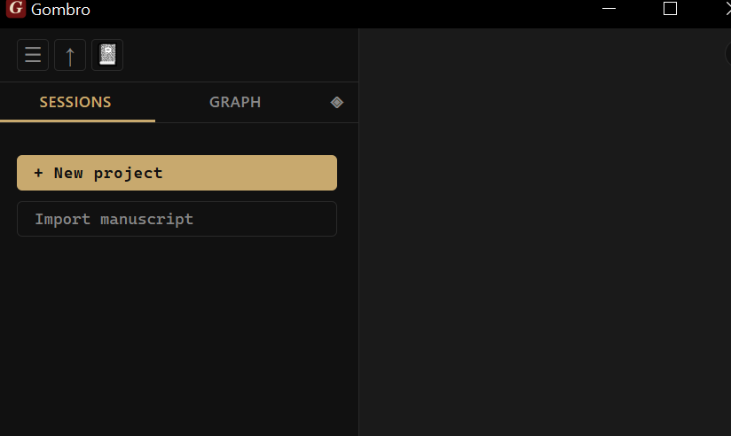
When we open Gombro a desktop with 3 panels appears: a command terminal at the bottom (don't be scared, it's very easy to use), the writing panel on the right, and on the left the explorer, where there are two possibilities:
-
Create our book project.
-
Import a manuscript, which can be in doc or markdown (md) format. Gombro takes its structure from the order of chapters it has (the division by heading-1, 2, 3 titles, always treating heading-1 titles as chapters).
Session
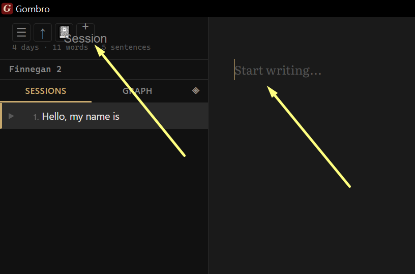
A session is when we start writing, and we may not know how it will end. Later it can become a chapter of the book.
We open a new session with the keys Ctrl + N or by clicking the plus sign on the top navigation bar.
An existing session is another possibility: in that case we click on the session in the explorer.
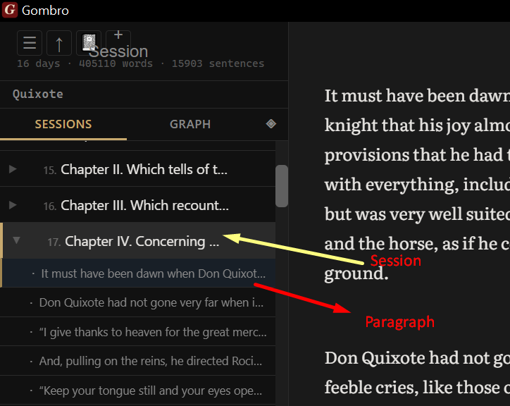
And there the session unfolds into paragraphs; clicking on them opens one, but we always keep the rest of the paragraphs of that session in view.
Kerouac mode is for when we want to see the whole novel (Project) as a single document.
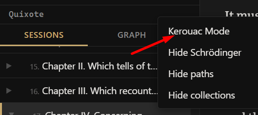
Kerouac mode is activated from the navigation bar with the right mouse button (a tribute to the writer who wrote On the Road on a continuous teletype roll so his writing would flow without interruption).
The three panels: editor, explorer and terminal
On the left the explorer, which is like the index of your book; on the right the editor, where you play with words (or they play with you); and below the terminal (not the bus kind) for you to give it orders (suggestions).
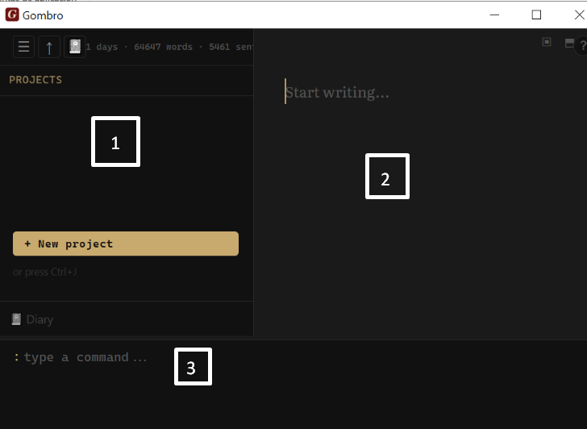
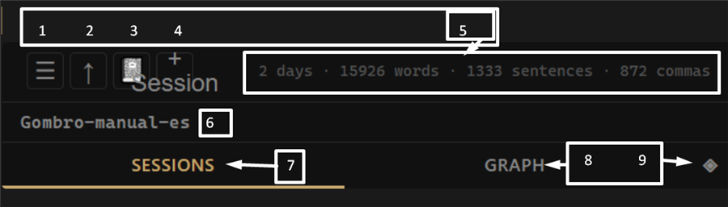
Explorer navigation bar- Hamburger (the three horizontal lines)
- The up arrow
- Diary
- Plus sign
- Days, words, sentences, commas
- The project we're working on
- Sessions (the sessions tab)
- Graph
- Summary mode
Editor navigation bar
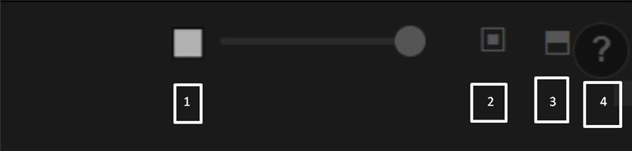
- Handle to enlarge or shrink the size of the writing sheet.
- Horizontal split
- Vertical split
- Help (?)
a) Explorer — the left panel. List of sessions of the active project. See Chapter 5.
b) Editor — the central writing area. Each block separated by a blank line is an independent paragraph. See Chapter 3.
c) Command terminal — the panel at the bottom. Press : or / to open it. See Chapter 4.
d) Status bar — shows the word count of the active document and access to compile options.
How everything connects
First we create the project, then come the sessions, and these contain paragraphs.
┌─────────────┐
│ PROJECT │ ← your body of work (novel, cycle, notebook)
└──────┬──────┘
│ contains
┌────┴────┬────────┬─────────┐
▼ ▼ ▼ ▼
Session Session Session Session
│ │
│ contains
▼
Paragraph ── version ── version ── version
│
├── hashtag
├── shuffle destination
└── graph node
Paragraphs leave a trail of versions that we can always recover.
In paragraphs there can be:
-
hashtag: keywords related to our book: characters, places.
-
The shuffle destination refers to a tool where we can mix paragraphs for pure experimentation and see what comes out.
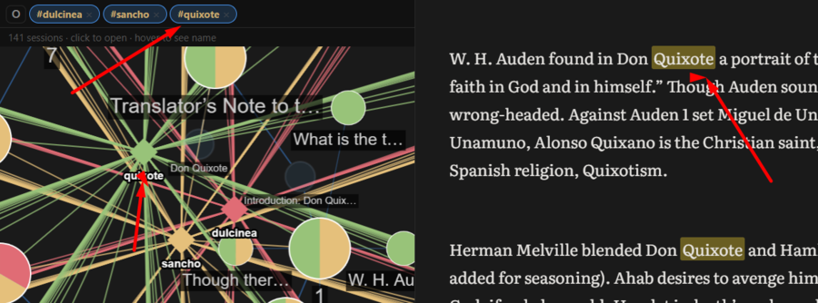
-
Graph node: when we make the chronological map of the novel, clicking on a node takes us to a paragraph where the keyword appears (we'll explain it properly later, but it's not hard because we already handle this concept intuitively).
2 — First steps
Step 1 — Create the first project
Type / (slash) in the command terminal and the command menu appears (relax! don't panic), and there you'll see "create project"; click it and type the title of your budding novel. You can also, if you're in the editor, press Ctrl+T and the à la carte command menu will emerge in all its abominable beauty.
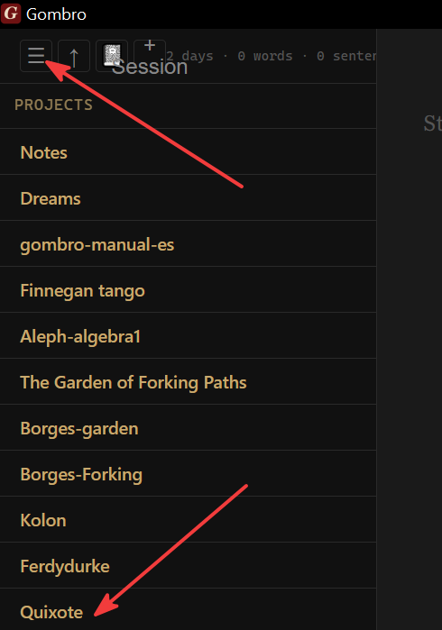
Then the project is created and stays active.
Step 2 — Create the first session
Now click on the little hamburger in the menu and open your project — in this poor example, Quixote (the novel that Miguel de Cervantes, already one-handed, wrote to make up for years in the Algiers prison at the hands of slave traffickers).
This will appear:
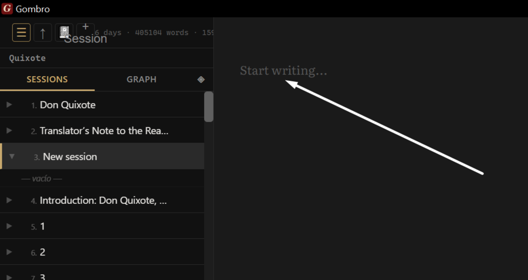
The blank (gray) page.
And you must start writing.
Press Ctrl+N, or open the Command terminal and type:
new Chapter One
Step 3 — Start writing
Click on the Editor area and start writing. That's all.
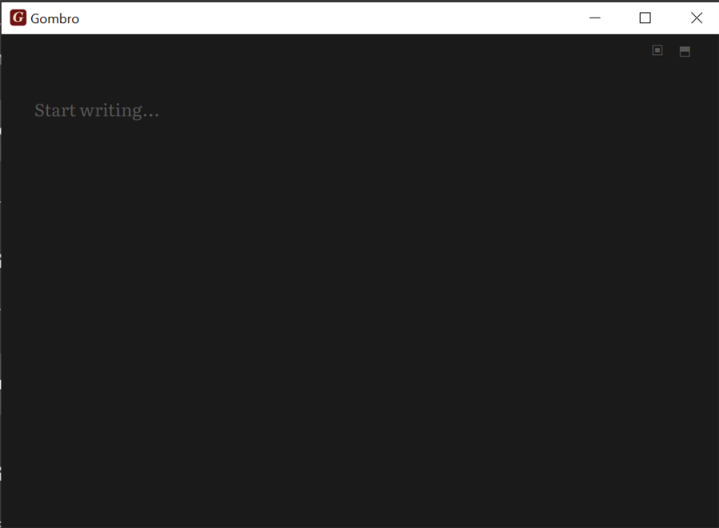
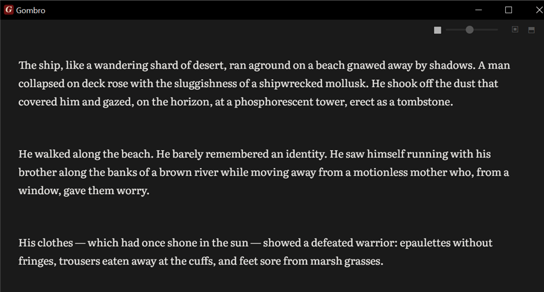
Key things before moving on
| What | How |
|---|---|
| Open the Terminal | : or / (bottom bar of the window) |
| Create a session | Ctrl+N or new <name> in the Terminal |
| Open help | [?] button, F1, or help in the Terminal |
| Change language | [ES] chip in the top bar or lang en in the Terminal |
| Close any modal | Esc |
3 — The Editor
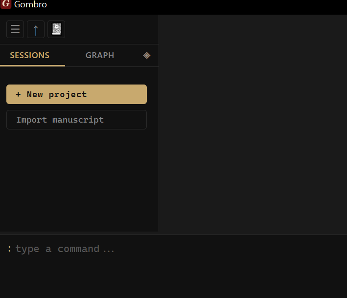
The Editor is where everything happens. It is intentionally austere — no toolbars, no formatting buttons, no rulers. Just the text and you.
Each block of text separated by a blank line is a paragraph — the fundamental unit in Gombro. Paragraphs are saved, versioned, shuffled and tagged individually.
Formatting bar
The editor has a small bar of inline formatting buttons. It appears on the editor's top bar, next to the sheet-width controls.
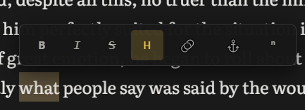
Select text before clicking: the button wraps the selection with the mark. If there is no selection, it inserts the mark with the cursor in the center so you can type directly.
| Button | Tooltip | Syntax | Result in the editor |
|---|---|---|---|
| B | Bold | **text** |
text |
| I | Italic | *text* |
text |
| Strikethrough | ~~text~~ |
||
| H | Highlight | ==text== |
yellow background on the text |
| 🔗 | Link | [text](url) |
hyperlink |
| ⚓ | Anchor / Title | ++text++ |
navigable position marker |
| ⁿ | Footnote | text[^1] |
footnote reference |
The formatting marks are shown visually in the editor (real bold, real italic, yellow background for highlight) and are saved as Markdown syntax in the database.
Inline syntax — quick reference
| Syntax | Name | In .docx |
In .html |
|---|---|---|---|
**text** |
Bold | Bold | <strong> |
*text* |
Italic | Italic | <em> |
~~text~~ |
Strikethrough | Strikethrough | <s> |
==text== |
Highlight | Normal text (no Word equivalent) | <mark> (yellow bg) |
++text++ |
Anchor / Title | Bold + underline | <strong><u id="a-slug"> |
[t](https://…) |
External link | Clickable hyperlink in Word | <a target="_blank"> |
[t](#slug) |
Internal link | Internal hyperlink in Word | <a> with hover popup |
Context menu
Right-click on any paragraph in the editor (Figure 3.1):
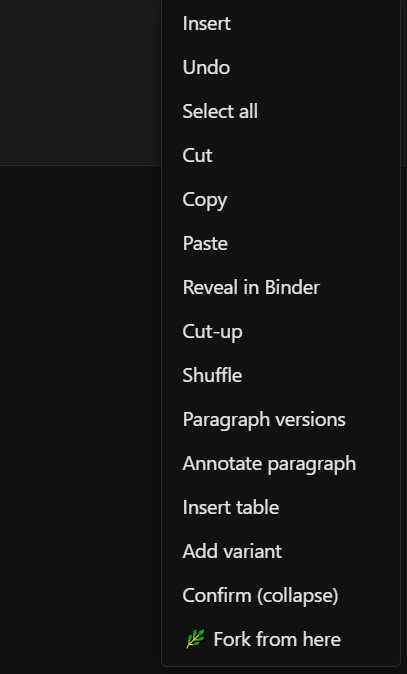
Figure 3.1 — The context menu of the Editor panel.
-
Insert — inserts an element at the cursor: image, table or separator.
-
Undo — undoes the last text change in the active paragraph.
-
Select all — selects all the content of the active paragraph.
-
Cut / Copy / Paste — standard clipboard operations.
-
Reveal in Filer — highlights the current session in the left Explorer.
-
Cut-up — mixes the paragraph with a random paragraph from another session of the project. See Chapter 12.
-
Shuffle — randomly reorganizes the order of paragraphs within the current session.
-
Paragraph versions — opens the paragraph's version history. See Chapter 13.
-
Annotate paragraph — adds a private note attached to the paragraph, not compilable.
-
Add variant — opens the Borges Algebra system to write alternatives to the paragraph without deleting the original. See Chapter 10.
-
Confirm (collapse) — resolves a Borges variant: choose one option and discard the rest.
-
🌿 Branch a path from here — creates a narrative path that forks from this paragraph. See Chapter 11.
Paragraph mode and sentence mode
The editor works in two modes:
Paragraph mode — the default mode. You see all the text of the active paragraph and write freely. Each block separated by a blank line is an independent paragraph.
Sentence mode — activate it with sentence mode in the Terminal. Each . isolates the current sentence — one at a time, the rest disappears. You write, add a period, it locks, and the next one opens.
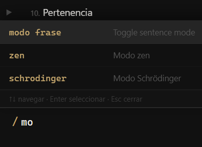
Figure 3.2 — Activating Sentence Mode from the Terminal: type / to open the command menu and choose "sentence mode", or type the command directly.
The two editor views (Figures 3.3 and 3.4):
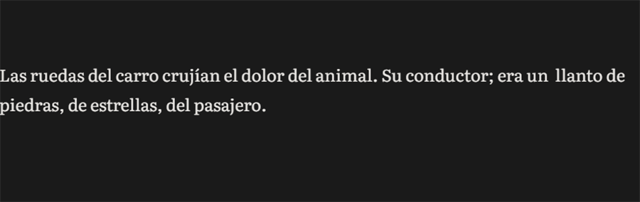
Figure 3.3 — Paragraph mode: the whole paragraph is visible and editable.
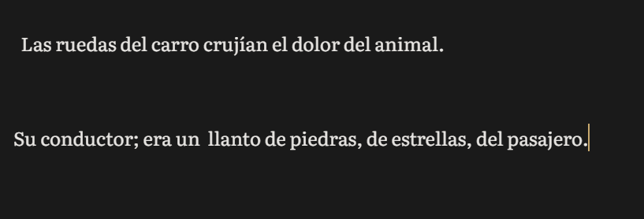
Figure 3.4 — Sentence mode: only the active sentence appears; the rest dims.
SENTENCE MODE — only one sentence visible at a time:
┌─────────────────────────────────────────────────────┐
│ Chapter One [sentence mode] [Select all]│
├─────────────────────────────────────────────────────┤
│ │
│ · · · · · · · · · · · · · · · · · · · · · · · · │ ← locked
│ │
│ In a village of La Mancha, the name of which I │
│ have no desire to call to mind, there lived... │ ← active
│ │
│ · · · · · · · · · · · · · · · · · · · · · · · · │ ← locked
│ │
└─────────────────────────────────────────────────────┘
you write → period [.] → it locks → the next one opens
Zen mode
Expands the editor to full screen. Activate it with zen in the Terminal, or by pressing Esc while idle.
NORMAL ZEN
────────────────────── ────────────────────────────────────────
┌────────┬───────────┐ ┌────────────────────────────────────────┐
│EXPLOR. │ EDITOR │ → │ │
│ │ │ │ In a village of La Mancha, │
│session1│ text... │ │ the name of which I have no │
│session2│ │ │ desire to call to mind, there │
│session3│ │ │ lived not long ago a gentleman... │
│ │ │ │ │
├────────┴───────────┤ └────────────────────────────────────────┘
│ :/ │ no panels · no chrome · only the word
└───────────────────┘
Layout — three panels
Gombro has three permanent zones:
┌────────┬───────────────────────────────────┐
│EXPLOR. │ EDITOR │
│ │ │
│session1│ text... │
│session2│ │
│session3│ │
│ │ │
├────────┴───────────────────────────────────┤
│ :/ │ ← Terminal / commands
└────────────────────────────────────────────┘
-
Explorer (left) — list of sessions of the active project.
-
Editor (center/right) — writing area.
-
Terminal (bottom) — command line. Open it with
:or/. PressCtrl+Tfor the floating palette.
Sheet width
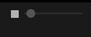
The slider on the editor's top bar controls the width of the text column. Move it left for narrower text ("sheet of paper" style), right to use all the available width. NARROW WIDTH FULL WIDTH
───────────────────────── ──────────────────────────────────────
┌────────────────────────────┐ ┌────────────────────────────────────┐
│ │ │ │
│ In a village of La │ │ In a village of La Mancha, the │
│ Mancha, the name of │ │ name of which I have no desire │
│ which I have no │ │ to call to mind, there lived... │
│ desire to recall... │ │ │
│ │ └────────────────────────────────────┘
└────────────────────────────┘
The setting is saved automatically and persists when you reopen Gombro.
Text scale
Change the size of the text in the editor with /scale in the Terminal. The number is a percentage: 100 is the default size.
/scale 125 → larger text (25% above the default)
/scale 80 → smaller text (20% below the default)
/scale 100 → back to the original size
This does not change the typeface or the line spacing — it only scales the base size.
Keyboard reference
| Action | How |
|---|---|
| Open Terminal | : or / |
| Floating palette | Ctrl+T |
| Floating search | Ctrl+F |
| New session | Ctrl+N |
| Today's diary session | Ctrl+D |
| Post-it of the active session | F4 |
| Help | F1 |
| Select all | [Select all] button or right-click |
| Activate Sentence Mode | sentence mode in Terminal |
| Activate Zen Mode | zen in Terminal · Esc while idle |
| Close Terminal / search / activate Zen | Esc (cascading) |
| Indent paragraph | Tab |
| Un-indent paragraph | Shift+Tab |
| Kerouac mode (whole project) | Ctrl+K |
4 — Command terminal ★
The Command terminal is Gombro's command-line panel — it lives below the editor. Press : or / to open it. Esc to close.
┌────────────────────────────────────────────┐
│ │
│ EDITOR │
│ │
├────────────────────────────────────────────┤
│ /pl │
│ /plan Hourly writing plan │
│ /scale Change text scale │
└────────────────────────────────────────────┘
Type / to see all the available commands (Figure 4.1):
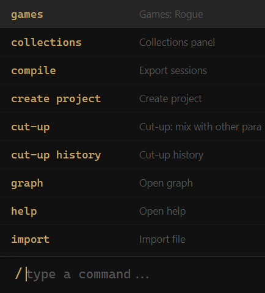
Figure 4.1 — The Terminal with / shows all the available commands.
-
search — searches text across all the sessions of the active project.
-
compile — opens the export modal to
.docxor.md. -
labyrinths — exports the project's narrative paths.
-
new — creates a new session in the active project.
-
open — shows the list of projects to change the active one.
-
create project — creates a new project.
-
view collections — opens the panel of saved search collections.
-
view graph — opens the project's graph view.
-
import — imports a
.md,.docxor.txtfile as a new session.
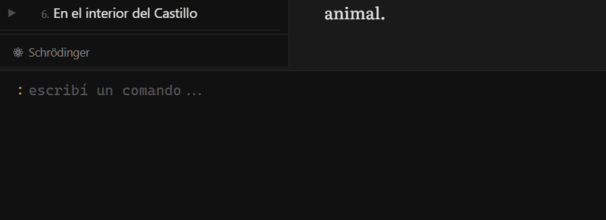
5 — The Explorer
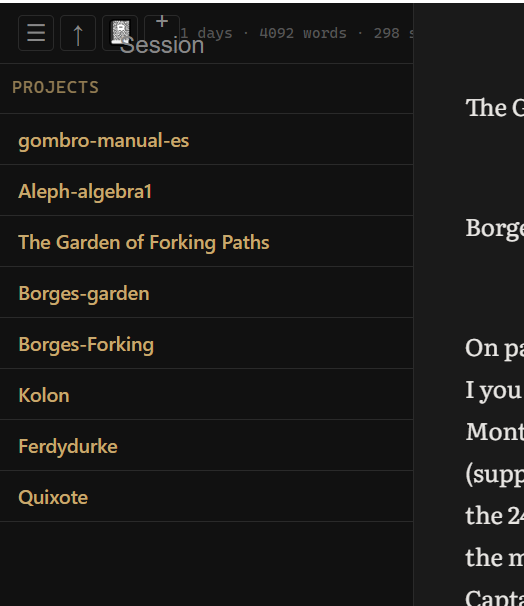
Figure 5.0 — The Explorer: top bar (a–e) and session list.
The Explorer is the left panel — your list of projects and sessions. The top bar has five controls:
a) ≡ — Explorer options menu: hide Schrödinger, paths, collections, and activate Kerouac Mode. b) ↑ — import an external file (.md, .docx, .txt) as a new session. c) 📖 — shortcut to the Diary. See Chapter 6. d) + — create a new session at the end of the list. e) Statistics — writing days and total words of the active project. See Chapter 9.
Session accordion
Each session in the Explorer can be expanded to show its paragraphs as a table of contents. The behavior is an accordion — only one session can be open at a time.
| Gesture | What it does |
|---|---|
| Click on the session name | Expands the session and shows its paragraphs · the editor goes to the first paragraph |
| Click on another session name | Closes the previous one · opens the new one · editor goes to the first paragraph |
| Click on a paragraph in the outline | The editor goes exactly to that paragraph |
| Click on ▶/▼ | Only expands/collapses the outline without moving the editor |
ACCORDION — only one session open at a time:
┌──────────────────────────────────────┐
│ ▶ Chapter One │ ← closed
│ ▼ Chapter Two ← open │
│ · The traveler reached the cas... │ ← paragraph 1
│ · Mercedes appeared at the door │ ← paragraph 2
│ · A vaporous smoke surrounded... │ ← paragraph 3
│ ▶ Chapter Three │ ← closed
└──────────────────────────────────────┘
Add a session or paragraph in position
Right-click on a session or on a paragraph in the expanded outline to insert new content right below the clicked element:
| Gesture | What it does |
|---|---|
| Right-click on session → Add session below | Creates a new session immediately below that session, ready to rename |
| Right-click on paragraph (outline) → Add paragraph below | Inserts an empty paragraph below the selected one — "new paragraph" appears in the explorer until you write |
Reorder paragraphs
In a session's expanded outline you can reorder paragraphs by drag & drop, just like sessions:
| Gesture | What it does |
|---|---|
| Drag a paragraph from the outline → drop in another spot | Moves the paragraph to that position, saves to DB and reloads the editor |
Project statistics
The statistics appear at the foot of the Explorer and update in real time:
-
Days — how many distinct days you wrote in this project.
-
Words — total words across all the sessions of the project.
-
Sentences — total number of sentences.
-
Commas — number of commas. A proxy for syntactic complexity.
Multiple selection
In the Explorer you can select several sessions at once:
| Gesture | What it does |
|---|---|
Ctrl+click |
Adds or removes a session from the selection |
Shift+click |
Selects the range from the last clicked session to this one |
Delete |
Removes all the selected sessions at once |
Session context menu
Right-click on any session (Figure 5.1):
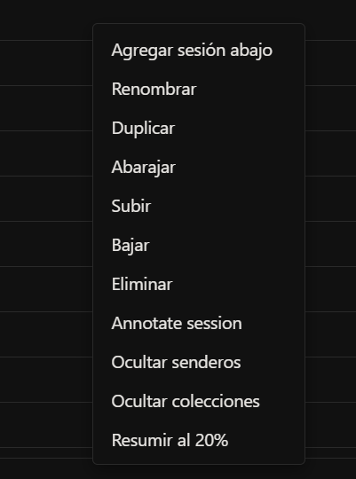
Figure 5.1 — The context menu of a session in the Explorer.
-
Add session below — creates a new session immediately below this one.
-
Rename — changes the name of the session.
-
Duplicate — creates an exact copy of the session with all its content.
-
Shuffle (Cut-up all) — applies the cut-up technique to all the paragraphs of the session. See Chapter 12.
-
Undo shuffle — reverts the last shuffle operation.
-
Move up / Move down — reorders the session within the project. You can also drag and drop directly in the list.
-
Move to
<project>— transfers the session to another existing project. -
Delete — deletes the session and all its content. This action cannot be undone.
Project context menu
Right-click on a project's name:
-
Rename — changes the name of the project.
-
Project summary at 20% — generates an extractive summary of the whole project. See Chapter 20.
-
Delete — deletes the project and all its sessions.
Explorer view options
Click ≡ to show or hide elements:
-
Hide Schrödinger — hides the ⚛ button. See Chapter 19.
-
Hide paths — hides the narrative paths panel. See Chapter 11.
-
Hide collections — hides the saved collections section. See Chapter 16.
-
Kerouac Mode — activates the continuous view of the whole project. See Chapter 21.
PART II — Writing
6 — The Diary
The Diary is a special project that Gombro keeps separate from your writing projects. One session per day, automatically named by date. Press Ctrl+D from anywhere to open it.
EXPLORER — the diary always at the end:
┌──────────────────────────┐
│ ▸ PROJECT: Don Quixote │
│ La Mancha │
│ The Knight │
│ ────────────────────── │
│ ▸ PROJECT: DIARY │ ← always at the bottom
│ Wed, April 22, 26 │ ← today (auto-created)
│ Tue, April 21, 26 │
│ Mon, April 20, 26 │
└──────────────────────────┘
How it works
-
Ctrl+Dfrom anywhere — opens today's session, creating it if it doesn't exist -
Session names are literary dates: Wed, April 22, 26
-
Ctrl+Nis disabled in diary mode — one session per day, created automatically -
At midnight, Gombro automatically switches to the next day's session
-
Also available from the slash menu: type
/→ diary
FLOW:
You press Ctrl+D from anywhere
↓
Does today's session exist?
┌────┴─────┐
YES NO
↓ ↓
you stay it's created on its own
there "Wed, Apr 22, 26"
↓
it opens in the editor
↓
you write freely — it saves on its own
↓
midnight → the next day's session opens
The diary is not a project — it's a habit. Gombro keeps it out of the way of your fiction, always at the bottom of the list, always one shortcut away.
7 — Dreamcatcher
The Dreamcatcher is Gombro's dream notebook. Capture nighttime dreams, daydreams, ramblings, fleeting images — each entry is an independent session, with its own identity.
Unlike the Diary, which creates one session per day, the Dreamcatcher creates a new session each time you open it. Each dream is its own fragment.
EXPLORER — the dreamcatcher:
┌──────────────────────────────┐
│ ▸ PROJECT: Don Quixote │
│ La Mancha │
│ ────────────────────────── │
│ ▸ PROJECT: Dreams │ ← always at the bottom
│ The riderless horse │ ← ordered by first 3 words
│ The city of water │
│ A train that never comes │
└──────────────────────────────┘
How it works
-
Ctrl+Ofrom anywhere — opens a new empty session in the Dreams project, ready to write -
Also available from the Terminal:
/sueños,/dreams,/atrapasueños,/dreamcatcher -
Sessions are ordered alphabetically by the first 3 words of the content — not by date
-
The session name is the date and time of creation (it updates automatically when you write)
FLOW:
You press Ctrl+O
↓
An empty session opens in the Dreams project
↓
You write the dream freely
↓
The first 3 words become the heading
↓
It saves on its own — appears in the list ordered alphabetically
Feeding the Dreamcatcher from notes
If you write a quick note (F4) with the hashtag #dreams or #sueños, Gombro captures that content automatically and creates an entry in the Dreamcatcher with that text.
Quick note with F4:
┌────────────────────────────────────┐
│ I dreamed I returned to the │
│ house of my childhood. Everything│
│ was identical but bigger. │
│ #dreams │
└────────────────────────────────────┘
↓ on save
→ an entry is created in Dreams with that content
Compiling dreams
When compiling with the compile modal, you can include the Dreamcatcher as a separate section of the final document.
Reference
| Action | How |
|---|---|
| Open a new dream | Ctrl+O from anywhere |
| Command | /sueños · /dreams · /atrapasueños · /dreamcatcher |
| Capture a dream from a note | F4 → write with #sueños or #dreams |
| Include in compile | Compile modal → Dreamcatcher checkbox |
8 — Project notes
Press Ctrl+P to open a notepad attached to the active project. Write freely — it saves automatically. Press Esc to close.
┌────────────────────────────────────┐
│ Project notes ✕ │
├────────────────────────────────────┤
│ - review the end of ch. 3 │
│ - Sancho can't know this │
│ yet │
│ - find a synonym for "hidalgo" │
│ │
└────────────────────────────────────┘
saves on its own · not compiled
The note doesn't appear in the Explorer, isn't compiled on export, and has no versions. It's a side table next to your desk.
9 — Hourly writing plan
The Writing plan is a modal that helps you plan a stage of the manuscript (a draft, a revision) in terms of hours of dedication per day, and shows how much you've written against what you planned. It's not a strict productivity tool. It's a mirror with a closing date.
How to open it
Press Ctrl+Shift+P, or type /plan in the Terminal and press Enter. Both open the same modal, centered over the editor. Close it with ✕, with Esc, or by clicking outside the modal.
Setting up the plan (first time)
If the active project has no plan, the modal opens directly in the setup form:
┌──────────────────────────────────────────────────┐
│ Writing plan — Hours ✕ │
├──────────────────────────────────────────────────┤
│ 1. GOAL OF THE PLAN │
│ ┌──────────────────────────────────────────┐ │
│ │ Second draft▾ │ │
│ └──────────────────────────────────────────┘ │
│ suggestions: First draft · Second │
│ draft · Final manuscript · Final revision │
│ │
│ Closing date │
│ ┌──────────────────────────────────────────┐ │
│ │ 2026-08-01 │ │
│ └──────────────────────────────────────────┘ │
│ You have left: 52 days │
│ │
│ 2. HOURS OF DEDICATION PER DAY │
│ ┌──────────────────────────────────────────┐ │
│ │ 2 │ │
│ └──────────────────────────────────────────┘ │
│ That's 14.0h per week · 104.0h in total │
│ until the closing date │
│ │
│ [Cancel] [Save plan] │
└──────────────────────────────────────────────────┘
-
Goal — a free name for this stage (with quick suggestions: First draft, Second draft, Final manuscript, Final revision).
-
Closing date — the day you want to have this stage finished.
-
Hours of dedication per day — how much time you plan to write each day. Gombro automatically calculates the weekly total and the total until the closing date.
The dashboard
Once configured, the modal opens directly on the dashboard:
┌──────────────────────────────────────────────────┐
│ Writing plan — Hours ✕ │
├──────────────────────────────────────────────────┤
│ Second draft │
│ Closing: 2026-08-01 · You have left: 52 days │
│ Dedication: 2h/day │
│ │
│ TODAY 1.5h / 2.0h ▓▓▓▓░ │
│ WEEK 8.0h / 14.0h ▓▓▓░░ │
│ │
│ ACCUMULATED (h) │
│ 40│ ░░░▓▓▓▓███████████ │
│ │░░░░░░░░░░░░░░░░░░░░░░░░ │
│ └──────────────────────── │
│ planned ░ done █ │
│ ──────────────────────────────────────────── │
│ Total accumulated: 96.5h │
│ Total words: 18,420 │
│ │
│ [Reset] [Close] [Modify plan] │
└──────────────────────────────────────────────────┘
-
TODAY / WEEK — hours written today and in the current week, against the goal calculated from your daily dedication. The bar fills as you progress.
-
ACCUMULATED (h) — a chart with two series: planned (░, the straight line of your daily dedication multiplied by the elapsed days) and done (█, what you actually wrote). If the "done" bar runs ahead of the "planned" one, you're ahead of schedule.
-
Total accumulated — the sum of all the hours logged in the project ever, no matter how many plans you set up. This number never resets.
-
Total words — the current word count of the whole project, same as in the Explorer. It's informational only: the plan is measured in hours, there is no word goal.
Indicator in the Explorer
While the modal is closed, the project's statistics line in the Explorer shows a ±Xh indicator: the difference between what was planned and what was done up to today.
┌───────────────────────────────────┐
│ My novel ☰ ↑ 📓 │
│ +1.4h · 12 days · 18420 words │
│ + Session │
└───────────────────────────────────┘
-
+1.4h→ you're 1.4 hours ahead of the plan. -
-2.0h→ you're 2 hours behind.
If the Explorer panel narrows and it doesn't all fit on one line, the statistics line moves to its own row so it doesn't overlap with the header buttons.
Modify and reset the plan
-
Modify plan — reopens the setup form with the current data loaded. You can change the goal, the closing date or the daily dedication without losing progress: the "ACCUMULATED" chart keeps counting from the same starting point.
-
Reset — clears the current plan's configuration (goal, closing date, dedication) and returns to the setup form, as if for the first time. The history of hours written is not erased: it stays saved and keeps adding to the "Total accumulated". It's the way to close a stage (e.g. "Second draft") and start the next one from zero, without losing the record of what's already done.
A writing plan is not a deadline. It's a habit made visible — and a history that isn't lost when you move to the next stage.
Reference
| Action | How |
|---|---|
| Open Writing plan | Ctrl+Shift+P, or /plan in the Terminal |
| Set up plan (first time) | Fill in goal, closing date and hours/day, then "Save plan" |
| Modify an existing plan | "Modify plan" button on the dashboard |
| Reset the plan (new stage) | "Reset" button on the dashboard |
| Close the modal | "Close" button, ✕, Esc, or click outside the modal |
| See progress without opening | ±Xh indicator on the Explorer's stats line |
PART III — Working the text
10 — Borges Algebra ★
The Borges Algebra is Gombro's system for writing with open alternatives — directly inspired by the way Borges corrected his manuscripts: not by deleting, but by branching.
In Borges's handwritten drafts you can see a crossed-out word with three alternatives written next to it, joined by a brace. He didn't resolve them right away. He let them coexist on the page until the right one became obvious — or until the ambiguity itself became the point.
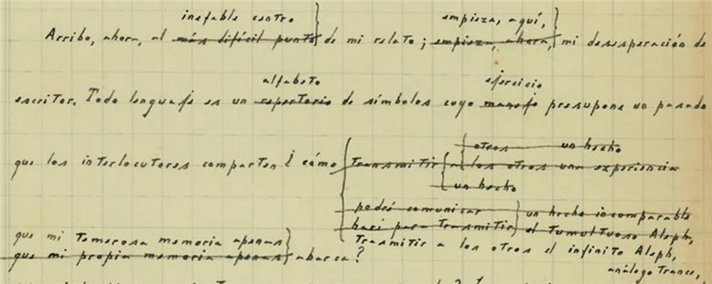
Insert a pending fragment
-
Click to position the cursor (or select a word/phrase)
-
Right-click → Insert
-
Write your text in the panel — it allows multiple lines
-
Press ok (or
Ctrl+Enter) to insert it as a pending Borges block
If you close the panel without pressing ok, nothing is inserted. The block stays pending until you confirm it.
INSERTION FLOW:
cursor here ↓
...there lived a gentleman ▌ of those with a lance...
right-click → Insert
┌─────────────────────────────────┐
│ the name of which I prefer │ ← write here
│ not to recall, │
│ [ok] │
└─────────────────────────────────┘
press ok (or Ctrl+Enter)
result — pending block inserted:
...there lived a gentleman ╔═══════════════════════════╗ of those with...
║ the name of which I ║
║ prefer not to recall, ║
╚═══════════════════════════╝
(pending — confirm it or leave it open)
Create a variant from a selection
-
Select any word or phrase
-
Right-click → Add variant
-
Write the alternative and press
Enter
The selected text becomes the first option. Your new text is the second. Both appear as a visual block. Variants stack with the original at the bottom and the new ones on top — the first version is always the bottom one:
SELECT → right-click → Add variant:
...the dog was [dead]
↓
write the alternative: "alive"
↓
...the dog was ┌─────────────┐
│ alive │ ← new variant (top)
│ dead │ ← original (bottom)
└─────────────┘ ...still barking
add more variants → each new one goes above the previous ones
Add sub-variants
You can branch an option inside a Borges block — create a variant of a variant. This reproduces the tree structure of Borges's manuscripts: each branch can fork into new branches.
-
Right-click on a specific row of the block
-
Choose Add sub-variant
-
Write the alternative and press
Ctrl+Enter
The chosen option becomes a new nested block with two branches — the original and the new one:
SUB-VARIANT — branch an existing option:
┌──────────────────────────┐
│ the dog was walking │ ← right-click → Add sub-variant
│ the dog was coming │
└──────────────────────────┘
↓
┌──────────────────────────┐
│ ┌────────────────────┐ │
│ │ the dog was trotting│ │ ← nested sub-block (new variant on top)
│ │ the dog was walking │ │ ← original at bottom
│ └────────────────────┘ │
│ the dog was coming │
└──────────────────────────┘
Internal syntax: {the dog was coming|{the dog was walking|the dog was trotting}}
There is no depth limit — each branch can keep forking.
Resolve a branch
RESOLUTION — Borges-style (crossed out, not deleted):
right-click on "dead" → Choose this one:
┌─────────────┐ ┌─────────────┐
│ dead │ → │ dead │ ← chosen
│ alive │ │ ~~alive~~ │ ← crossed out (still visible)
│ unconscious │ │ ~~unconscious~~ │
└─────────────┘ └─────────────┘
right-click → Confirm (collapse) → plain text: "dead"
the alternatives disappear only when YOU decide.
Right-click on any row of the block:
| Action | Effect |
|---|---|
| Choose this one | Crosses out all the other options |
| Cross this one out | Marks this option as discarded |
| Confirm (collapse) | Collapses the block to plain text (if only one option is live) |
Export variants to DOCX
When compiling to .docx, Borges variants are exported as a stacked typographic brace — inline in the text, with no boxes or borders. The original version stays at the bottom; the variants added later stay on top.
IN GOMBRO:
...so you can give the terminal {orders|suggestions|instructions}...
IN WORD (.docx):
instructions
suggestions
so you can give { orders to the terminal.
The brace { scales to span all the options. Its center point coincides with the center of the block. The text before and after the variant continues on the same line.
Syntax
Internally it's saved as {option1|option2|~~crossed-out~~}. You never see it while writing — the editor renders the visual block automatically.
The philosophy
The Borges Algebra is a way of keeping contradictions open — of writing a text that contains its own alternatives without forcing a resolution.
Borges wrote: "Time forks perpetually toward innumerable futures." The Borges Algebra is the word processor that believes him.
11 — Paths (narrative labyrinths) ★
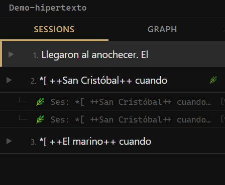
A Path is a narrative fork. From any paragraph you can open an alternative route — a version of the story that splits at that exact point and follows its own course. The text forks, it isn't replaced.
Create a path
Right-click on the paragraph where you want to fork and choose 🌿 Branch a path from here. Gombro creates the path and registers it in the Explorer below the originating session, as a child row.
The path's name is generated automatically: Ses: [session name] — paragraph: [first words]. You can rename it with a right-click.
Paths in the Explorer
Paths appear inline, nested under the session where they were born:
▼ Story 1 🌿
🌿 The alternative road [¶3]
-
The 🌿 indicator on the session means it has at least one path.
-
The [¶N] button navigates to the exact paragraph where the fork is born.
Open a path
Click on the path in the Explorer. It opens as its own session with the content inherited up to the fork point. What you write in the path doesn't touch the original session.
The origin banner
When a path is open, a green bar appears above the editor. Clicking it takes you back to the originating session at the fork point.
Compile — Labyrinth version
When you open the compile modal with Project active, if the project has paths the checkbox appears:
🌿 Labyrinth version (paths interleaved with §)
When you activate it, the compiled document numbers all the sections and adds fork markers:
§ 1 Session A
§ 2 Session B
§ 3 Session C ← fork point
[🌿 The alternative road → go to § 5]
[Normal reading → § 4 Session D]
§ 4 Session D
§ 5 🌿 The alternative road
[← This path was born in § 3 Session C]
[The story continues in § 4 Session D]
The markers are internal hyperlinks in .docx and links in .md. The reader navigates between the linear reading and the detours without losing the thread.
Reference
| Action | How |
|---|---|
| Create a path | Right-click on paragraph → 🌿 Branch a path from here |
| Open a path | Click on the path in the Explorer |
| Go to the origin paragraph | Click the [¶N] button next to the path |
| Return to the origin | Click the green banner above the editor |
| Rename | Right-click on the path → Rename |
| Delete | Right-click on the path → Delete path |
| Labyrinth version | Compile modal → enable 🌿 Labyrinth version |
12 — Shuffle and cut-up ★
"When you cut into the present, the future leaks out." — William S. Burroughs
 Source: Cut-up technique - Wikipedia
Source: Cut-up technique - Wikipedia
The cut-up technique was invented by Tristan Tzara in the 1920s and taken to its extreme by William S. Burroughs and Brion Gysin in the 1960s. Burroughs cut up pages of newspapers, his own novels, transcripts — and physically mixed them to break the linearity of meaning. The result wasn't pure chance: it was controlled collision. The writer decides what stays.
Shuffle applies that logic directly to your manuscript: it takes a paragraph you wrote and mixes it with a random paragraph from somewhere else in the project. All the material comes from your own writing — there's nothing foreign.
BEFORE SHUFFLING:
session "Chapter One" session "The Knight"
────────────────────── ───────────────────────────
In a village of La Mancha, Our gentleman was bordering
the name of which I have no on fifty years of age; he was
desire to call to mind, of a hardy constitution,
there lived not long ago spare, gaunt-featured,
a gentleman... a very early riser.
↓ right-click → Shuffle ↓
AFTER — the two collide:
────────────────────────────────────────────────────────
In a village of La Mancha, spare, gaunt-featured — the
name of which I have no desire to call to mind, there
lived not long ago a gentleman of those with a lance in
the rack, an old shield. He was bordering on fifty and rose very early.
────────────────────────────────────────────────────────
something new appeared. you didn't plan it.
Right-click on any paragraph → Shuffle.
If the result doesn't interest you: right-click on the session → Undo shuffle.
When to use Shuffle
-
When a paragraph feels stuck
-
When you want unexpected connections between sessions
-
When the next logical sentence is the last thing you want to write
Shuffle is not a random generator. It's a stimulus from your own writing — everything it pulls comes from text you wrote yourself.
13 — Paragraph versions
Every time a paragraph changes, Gombro saves a copy automatically. It's a per-paragraph history — not an undo.
Access: right-click on a paragraph → Paragraph versions, or hover over a session in the Explorer → click the clock icon.
TIMELINE — paragraph 1:
┌──────────────────────────────────────────────────────┐
│ Versions · paragraph 1 [Close] │
├──────────────────────────────────────────────────────┤
│ │
│ ● CURRENT │
│ In a village of La Mancha, the name of which │
│ I have no desire to call to mind... │
│ │
│ ── Apr 17 · 11:42am ────────────────────────────── │
│ In a village of La Mancha — I'd rather not name │
│ which — there lived not long ago a gentleman... │
│ [Restore this version] │
│ │
│ ── Apr 16 · 9:15pm ─────────────────────────────── │
│ In La Mancha, somewhere, there lived a man. │
│ [Restore this version] │
│ │
│ ── Apr 15 · 3:30pm ─────────────────────────────── │
│ There was a man in La Mancha. │
│ [Restore this version] │
└──────────────────────────────────────────────────────┘
nothing is erased — every draft is recoverable
Click Restore this version to go back. The current text becomes a new version — nothing is permanently lost.
14 — Doubt marks
A Doubt mark is a visual signal you leave on a word or phrase when you're not sure about it — but you don't want to delete it either. The text stays underlined with an accent color, visible but without interrupting the reading.
It's different from the Schrödinger strikethrough: the strikethrough says "this might be cut", the doubt says "this might need revision".
Our gentleman was bordering on
▒▒▒▒▒▒▒▒▒▒▒▒▒▒▒▒▒▒
fifty years of age; of a hardy constitution.
↑
text marked with Doubt (accent underline)
How to mark text with doubt
-
Select the word or phrase
-
Right-click → Doubt
The text appears underlined with the editor's accent color.
How to confirm (remove the doubt)
-
Right-click on the marked text
-
Choose Confirm (remove doubt)
The text becomes clean — without the mark, without modifying the content.
Reference
| Action | How |
|---|---|
| Mark as doubt | Select → right-click → Doubt |
| Confirm (remove doubt) | Right-click on marked text → Confirm (remove doubt) |
15 — Tables
Gombro lets you create and edit tables directly in the editor. Tables are shown as a visual widget — not as plain text — and can be edited cell by cell.
Create a table
Press Ctrl+Shift+T. A panel opens where you choose the number of rows and columns. Gombro inserts the table at the cursor.
Edit a table
┌────────────┬──────────────┬──────────┐
│ Character │ Role │ Status │ ←┐
├────────────┼──────────────┼──────────┤ │ header
│ Alonso │ protagonist │ active │ │ (on/off)
│ Sancho │ squire │ active │ │
│ Dulcinea │ absent │ — │ │
└────────────┴──────────────┴──────────┘
↕ drag the column border to resize
Click on the table to open the cell editor. You can:
-
Edit the content of each cell
-
Add or remove rows and columns
-
Turn the header row on or off
Imported tables
When you import a .md file that contains tables in | col | col | format, Gombro automatically converts them to the native ::table format — they become editable just like those created inside Gombro.
When compiling
| Format | Result |
|---|---|
.docx |
Table with borders and a bold header, embedded in the document |
.md |
Standard GFM table, readable in any Markdown viewer |
Reference
| Action | How |
|---|---|
| Create table | Ctrl+Shift+T |
| Edit table | Click on the table |
PART IV — Exploring the manuscript
16 — Search and Collections ★
Find any fragment of the manuscript in less than a second.
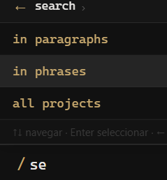
Search scans the full text of every paragraph in the active project — all the sessions at once.
search hidalgo
SEARCH RESULT — "search hidalgo":
┌──────────────────────────────────────────────────┐
│ 🔍 hidalgo [5 results] │
├──────────────────────────────────────────────────┤
│ La Mancha │
│ ...I have no desire to call to mind, there │
│ lived a [hidalgo] of those with a lance... │
│ │
│ The Knight │
│ Our [hidalgo] was bordering on fifty years │
│ of age... │
│ │
│ The departure │
│ ...with which such [hidalgos] usually arm... │
│ │
│ + Save as collection │
└──────────────────────────────────────────────────┘
click any result → goes straight to the paragraph in the editor
Search in sentences
Use sentence mode for results at the level of an individual sentence — more precise, more localized:
search hidalgo in sentences
SEARCH IN SENTENCES — more granular:
without sentence mode:
───────────────
La Mancha
...I have no desire to call to mind, there lived a [hidalgo]
of those with a lance in the rack, an old shield, a lean
hack and a greyhound for coursing...
(whole paragraph)
with sentence mode:
───────────────
La Mancha
...there lived a [hidalgo] of those with a lance in the rack...
(only the sentence that contains it)
Collections
A Collection is a saved search. After any search, click + Save as collection. Name it, save it, and it appears in the Explorer — one click to run it again.
┌──────────────────────┐
│ Sessions [↑] │
│ ──────────────── │
│ La Mancha │
│ The Knight │
│ Stew and Income │
│ The Housekeeper │
│ ──────────────── │
│ COLLECTIONS │ ← saved searches, always one click away
│ ▸ The hidalgo's arc │
│ ▸ Food and income │
│ ▸ Naming debate │
└──────────────────────┘
17 — Hashtags and filters
Tags you assign manually to individual paragraphs. Track characters, objects, recurring motifs — find them all instantly.
Right-click on a paragraph → # (hashtag panel). Turn tags on or off, create new ones.
Search by tag like any term:
search #ama
Hashtag filter in the Explorer
If your project uses hashtags, you can filter the session list by hashtag directly from the Explorer — without opening the search panel.
At the bottom of the Explorer, the project's hashtags appear as small tags. Click one to show only the sessions that contain that hashtag. Click again to remove the filter.
It's useful when a project has many sessions and you want to focus on those that correspond to a specific character, place or theme.
┌────────────────────────────────────┐
│ Sessions │
│ ────────────────────────────────── │
│ ▼ La Mancha #hidalgo #ama │
│ ▼ The Knight #hidalgo │
│ ▼ Stew and Income #ama │
├────────────────────────────────────┤
│ HASHTAGS │
│ [ #hidalgo ] [ #ama ] [ #lanza ] │
└────────────────────────────────────┘
↑ clicking a tag filters
the session list
Reference
| Action | How |
|---|---|
| Add a hashtag | Right-click on paragraph → # (hashtag panel) |
| Search by hashtag | search #tag in the Terminal |
| Filter by hashtag | Click the hashtag tag in the Explorer |
| Remove the filter | Click the active hashtag again |
| Manage hashtags | /tag in the Terminal |
18 — A graph view of my book ★
Your whole project at a glance. Every session as a node — filter by keyword to see where each theme lives.
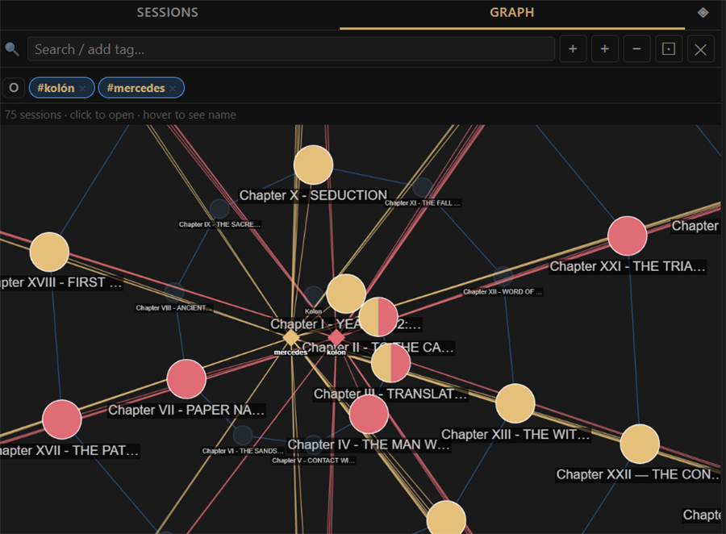
In the Explorer, click the GRAPH tab. Gombro automatically loads all the sessions of the project as nodes arranged in a spiral. The size of each node reflects the number of paragraphs in that session.
How to read the graph
Each node is a session: bigger = more paragraphs. The lines join the sessions in their order within the project. The top bar shows the total — for example "75 sessions · click to open · hover to see the name".
-
Click on a node → opens that session in the Editor
-
Hover → shows the full name of the session
Filter by keyword
The graph's search bar is for finding sessions by content:
-
Type a word in the bar → Enter or click +
-
The word is saved as a chip in the keywords panel
-
The sessions that contain that word are highlighted: they grow to double size and are painted with the color assigned to that keyword
-
The ones that don't match dim out
-
When you reopen the graph, the keywords activate automatically
Colors and halves: several keywords at once
When you activate more than one keyword, each gets a fixed color (the first red, the second golden/amber, the third green, and so on). That color appears both in the keyword's diamond (at the center) and in the spheres that contain it:
- A session that mentions a single keyword → a sphere of that keyword's full color.
- A session that mentions two → a sphere split half and half with the two colors, like a pie chart.
- Three or more → the sphere is divided into equal slices, one per keyword.
So, at a glance, you see which theme lives in each session — and where they cross — without opening them.
In the image above, #kolón appears in red and #mercedes in gold; the sessions that mention both are shown split half and half.
Combine keywords: AND / OR
To the left of the chips there's a button that toggles between OR (any) and AND (all). It applies only to the active keywords:
- OR (default): the sessions that contain any of the active keywords are highlighted.
- AND: only the sessions that contain all the active keywords are highlighted — that is, where the themes cross within the same session.
Example. With the chips
kolonandmercedesactive: in OR all the sessions where either appears light up; in AND only the sessions where both appear light up (where the characters meet).
If you have many words, turn the chips on or off with a click: the AND/OR button combines only the active ones.
┌────┐
│ OR │ ●kolon × ●mercedes × ○kristobal × ← OR: any of the active ones
└────┘ (kristobal is off)
┌─────┐
│ AND │ ●kolon × ●mercedes × ← AND: ONLY where both are
└─────┘ (where they cross in the session)
● active chip (with color) ○ inactive chip (gray)
Paragraph orbit
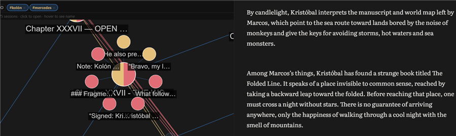
With keywords active, click a highlighted session to see which specific paragraphs contain the word:
-
The matching paragraphs appear as small nodes around the session
-
Click on a paragraph → opens the editor at that exact point
-
Each matching paragraph is painted with its keyword's color (and half/half if it contains two), just like the sessions
Underlining in the Editor
When you click a sphere or a paragraph in the graph, Gombro opens that session in the Editor and underlines all the active keywords within the text (not just one), so you can locate them immediately.
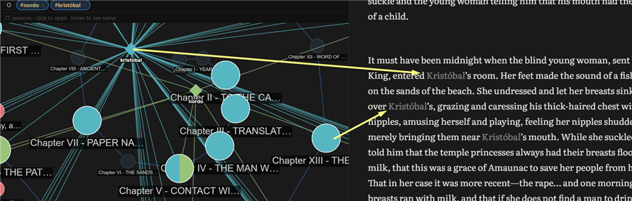
Graph controls
| Action | How |
|---|---|
| Open the graph | Explorer → GRAPH tab |
| Add a keyword | Type in the bar → Enter or + |
| Turn keyword on/off | Click the chip |
| Remove a keyword | Click the chip's × |
| Open a session | Click the node |
| Zoom | Mouse wheel |
| Fit view | ⊡ button |
| Close the graph | ✕ button or Escape |
19 — Schrödinger mode ★
In 1935 Erwin Schrödinger described a cat locked in a box: without opening the box, the cat is simultaneously alive and dead. Only on observing it does it collapse into one of the two states.
Gombro's Schrödinger Mode applies that logic to text: there are fragments that are not yet one thing or the other. They're written, but not decided.
What is text in a quantum state?
In Gombro, a paragraph is in a Schrödinger state when it contains one of these elements:
| Type | How it looks | What it means |
|---|---|---|
| Strikethrough | Marked for possible deletion — you haven't decided | |
| Borges variant | {option A | option B} | Two possibilities, neither chosen |
The strikethrough says: "this might be cut." The variant says: "this might be this, or that." Neither is final. The text stays open.
How to strike out text
Select any fragment → right-click → Strike out. The text stays visible but crossed.
┌───────────────────────────────────────────────────┐
│ ...in a village of La Mancha, the name │
│ of which ~~I have no desire to recall~~, not... │
└───────────────────────────────────────────────────┘
↑ in the editor it shows as a visual strikethrough,
the ~~ are hidden but saved
Then, right-click on the struck-out text:
┌──────────────────────┐
│ Delete │ ← removes the fragment
│ Edit │ ← removes the strikethrough, you edit
└──────────────────────┘
Edit is the Borges option: you don't delete the thought, you transform it. You write the variant, Enter, and it's left clean without a strikethrough.
The ⚛ Schrödinger button
At the foot of the Explorer, above Collections, the Schrödinger button always appears:
┌──────────────────────────────────┐
│ session 1 │
│ session 2 │
│ session 3 │
│ ────────────────────────────── │
│ ⚛ Schrödinger [3] │ ← yellow indicator = pending paragraphs
│ ────────────────────────────── │
│ 📁 my collection │
└──────────────────────────────────┘
-
The indicator updates automatically when you change projects or save
-
Click it to see the list of paragraphs in a quantum state
-
Click any paragraph in the result to go straight to it in the editor
The Schrödinger list
When you click ⚛, the Explorer panel shows the pending paragraphs grouped by session — just like search results:
⚛ Schrödinger [3] [✕ close]
──────────────────────────────────────────
Chapter One
~~I have no desire to recall~~, not long...
──────────────────────────────────────────
Chapter Two
...there lived a hidalgo {of those with a
lance|with a lance} in the rack...
──────────────────────────────────────────
Epilogue
~~This part is unnecessary~~ · The story that...
Schrödinger and compiling
When you compile to docx or md, Gombro scans the project. If there are paragraphs in a Schrödinger state, a notice appears before generating the file:
⚛ 3 paragraphs in a Schrödinger state
(strikethroughs or unresolved variants)
You can compile anyway — it's just a reminder.
The complete flow
YOU WRITE YOU DOUBT YOU DECIDE
──────── ───── ───────
normal text → Strike or Variant → ⚛ Schrödinger
↓
click a paragraph
↓
right-click → Delete
→ Edit
↓
indicator reaches 0
↓
clean compile
Borges struck out but did not delete. He left the discarded visible, as proof that the thought had been there. Schrödinger Mode is exactly that: a space for doubt before the decision.
Reference
| Action | How |
|---|---|
| Strike out a selection | Select → right-click → Strike out |
| Delete a strikethrough | Right-click on a strikethrough → Delete |
| Edit a strikethrough | Right-click on a strikethrough → Edit → write → Enter |
| See pending paragraphs | Click ⚛ Schrödinger in the Explorer |
| Direct command | schrodinger in the Terminal · Ctrl+Q |
20 — Extractive summary ★
Instruments so the author sees their own manuscript better. Not yet another copilot smarter than the pilot.
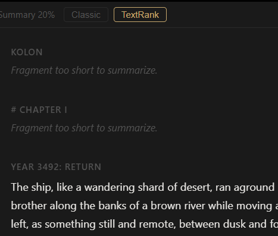
Gombro's extractive summary doesn't invent text. It selects original sentences from the chapter — the ones that best represent the whole — and shows them in narrative order. It's a mirror, not a synthesis.
It doesn't use generative AI. It doesn't rewrite. It doesn't summarize "in its own words". It takes your sentences and groups them.
Project view — the book at a glance
Click the ◈ button in the Explorer (next to SESSIONS and GRAPH):
EXPLORER — activate the summary view:
┌──────────────────────────────────────┐
│ Novel Kolon │
│ ────────────────────────────────── │
│ SESSIONS GRAPH ◈ │ ← click ◈
│ ────────────────────────────────── │
│ 1. Contents │
│ 2. YEAR 3492: RETURN │
│ 3. Cotton Ears │
│ 4. Smoke │
│ 5. To the Castle │
└──────────────────────────────────────┘
The editor shows all the sessions summarized at 20%, each with its title, in narrative order.
The view is generated automatically when you activate ◈. When you close it you return exactly where you were.
Summary of an individual session
To summarize an open session, use /summarize in the Terminal or the context menu. The floating summary panel opens:
SUMMARY PANEL — individual session:
┌────────────────────────────────────────────────────┐
│ Summary at 20% — session [✕] │
├────────────────────────────────────────────────────┤
│ 52 words of 211 · 4 sentences of 18 · EN │
│ │
│ A vaporous, phosphorescent smoke surrounded the │
│ houses of the city. … Mercedes had slipped to │
│ the door. … —Imperceptible, like a tired ghost. │
│ … They reached the room, the darkness retreated │
│ before the oil lamp. │
│ │
├────────────────────────────────────────────────────┤
│ [Classic] [TextRank] [10%] [20%] [30%] [50%] │
│ [Copy] │
└────────────────────────────────────────────────────┘
The two algorithms
| Classic | TextRank | |
|---|---|---|
| How | Most frequent keywords | Most representative sentences |
| Good for | Chapters with repeated terms | Chapters with varied vocabulary |
| Speed | Instant | A little slower |
Hashtags as signals
The project's hashtags (#word) act as boost words — the sentences that contain them rise in the ranking and have a better chance of making it into the summary.
Reference
| Action | How |
|---|---|
| Project view (all sessions) | Click ◈ in the Explorer |
| Close project view | Click ◈ again |
| Open a session from the view | Click the summary block |
| Summary of an individual session | /summarize in the Terminal |
| Change the percentage | 10% / 20% / 30% / 50% buttons |
| Change the algorithm | Classic / TextRank buttons |
| Copy the summary | Copy button |
21 — Kerouac mode ★
In 1951, Jack Kerouac taped sheets of paper together into a continuous 36-meter roll so he could write On the Road without interruptions — without changing pages, without cuts, without losing the flow. He wrote the first version in three weeks.
Gombro's Kerouac Mode replicates that idea: it joins all the sessions of the project into a single continuous document, scrollable from beginning to end.
How to activate it
Option A — Explorer menu: Click ≡ in the Explorer → Kerouac Mode
Option B — Keyboard shortcut: Ctrl+K
To exit: the same menu → Exit Kerouac, or Ctrl+K again.
What it does
-
The editor loads all the project's sessions concatenated, in the Explorer's order
-
Each session has a visual header that identifies it
-
The text is fully editable — changes are saved automatically per session
-
The Explorer syncs in real time with the cursor: when you move the cursor to a session, the Explorer highlights that session and shows its paragraphs in the accordion
KEROUAC MODE — the whole book at once:
┌────────────────────────────────────────────────────┐
│ CHAPTER ONE │
│ In a village of La Mancha, the name of which I │
│ have no desire to call to mind, there lived... │
│ │
│ CHAPTER TWO │
│ Our hidalgo was bordering on fifty years of │
│ age; he was of a hardy constitution... │
│ │
│ CHAPTER THREE │
│ ... │
└────────────────────────────────────────────────────┘
Sync with the Explorer
While you're in Kerouac Mode:
-
Moving the cursor to a session → the Explorer scrolls and opens that session's accordion
-
Clicking a session in the Explorer → the editor scrolls to that session
-
Clicking a paragraph in the Explorer → the editor scrolls to that exact paragraph
BIDIRECTIONAL SYNC:
cursor in Chapter Two Explorer
─────────────────────── ──────────
CHAPTER ONE → ▶ Chapter One
... ▼ Chapter Two ← open
· paragraph 1
CHAPTER TWO ← cursor · paragraph 2 ← highlighted
Our hidalgo... ▶ Chapter Three
Saving in Kerouac Mode
Changes are saved automatically every few seconds. When you exit Kerouac Mode, Gombro detects which session the cursor was in and opens it normally.
Reference
| Action | How |
|---|---|
| Activate Kerouac Mode | Ctrl+K · ≡ menu → Kerouac Mode |
| Exit Kerouac Mode | Ctrl+K · ≡ menu → Exit Kerouac |
| Navigate from the Explorer | Click a session or paragraph in the accordion |
| Save | Automatic — no action needed |
PART V — Organizing
22 — Session indicators
Each session in the Explorer can have its own note — a free annotation visible at a glance. An indicator (✎) appears on sessions that have notes, so you can tell at a glance which ones have context.
How to add a note to a session
-
Right-click on the session name in the Explorer.
-
Select Annotate session.
-
A small panel opens. You write your note.
-
The note saves on its own.
Notes can also be anchored to specific paragraphs using F4 while you write.
The indicator
Sessions with at least one note show an ✎ indicator in the Explorer. It's useful for marking sessions that need attention, have context, or are in progress — without having to open them.
Reference
| Action | How |
|---|---|
| Add a note to a session | Right-click on session → Annotate session |
| Add a note to a paragraph | F4 with the cursor in the paragraph |
| See all the notes | /note view in the Terminal |
23 — Sync notebooks from other devices
Obsidian is a note app for writers and thinkers. It saves notes as plain text files (.md) on your computer — no cloud, no subscription. You can download it for free at obsidian.md.
If you use Obsidian alongside Gombro, the Obsidian Notebook lets you bring your Obsidian notes into your writing project automatically.
How the connection works
Obsidian and Gombro run on your computer. Gombro finds your Obsidian vault automatically — no need to configure paths or settings.
The connection is based on hashtags. If your project in Gombro is called Kolon, Gombro will look for the Obsidian notes that contain #kolon. Each matching note appears in the Obsidian Notebook.
A typical flow
-
You're out, reading, thinking. You open Obsidian on your phone or laptop and write: "The colonel's uniform brushes the ground when he walks. #kolon"
-
Back at your desk, you open Gombro and open the Kolon project.
-
A notification appears: "You have new notes in Obsidian."
-
You type
/obsidianin the Terminal. The Obsidian Notebook opens. -
You see the note. You copy it into your session. Done.
The Obsidian Notebook panel
-
Shows only the notes that are new or modified since the last time you reviewed them.
-
Each note has two buttons: ⎘ Copy (copies the content to the clipboard and removes it from view) and ✕ Delete (marks it as read — it won't appear again unless the note changes in Obsidian).
-
Click Refresh to rescan the vault.
Multiple projects
The hashtag is derived from the project name automatically. Project Quixote → looks for #quixote. You can use multiple hashtags in a single Obsidian note to send it to several projects.
Reference
| Action | How |
|---|---|
| Open the Obsidian Notebook | /obsidian in the Terminal |
| Copy a note | Click ⎘ — copies to the clipboard, leaves the view |
| Dismiss a note | Click ✕ — marks as read, won't appear again |
| Refresh | Click Refresh in the panel |
| Download Obsidian | obsidian.md (free) |
24 — Insert image
You can insert images directly in the editor. The image is automatically copied to the project's folder and shown rendered inline — not as a link, but as the actual image.
How to insert
Position the cursor where you want the image and press Ctrl+I. The system file picker opens. Choose the image (.jpg, .jpeg, .png, .gif, .webp, .svg).
The image is copied to AppData\gombro\{project}\images\ and appears centered in the editor at 60% of the width.
Resizing
Click on the image to cycle between three sizes:
| Size | Width |
|---|---|
| S | 25% of the text area |
| M | 60% of the text area (default) |
| L | 100% of the text area |
The tooltip shows "Click to enlarge" or "Click to shrink" depending on the current size. The chosen size is saved with the document.
When compiling
-
.md— theimages/folder is copied next to the generated file. -
.docx— images are embedded directly in the Word document. -
.html— images are converted to base64 and embedded in the file. The.htmlis completely self-contained.
Reference
| Action | How |
|---|---|
| Insert image | Ctrl+I → choose file |
| Change size | Click the image (cycles S → M → L → S) |
PART VI — Compile (export to md/doc)
25 — Import and export
Import md and doc documents
Click [↑] in the Explorer header. It accepts .txt, .md, .docx. Each paragraph/section becomes a session in a new project.
Export md and doc
compile
Typing compile opens the compile modal — a panel where you choose exactly which parts to include and the output format (.docx or .md). See Chapter 26 for the full reference.
26 — Compile Modal ★
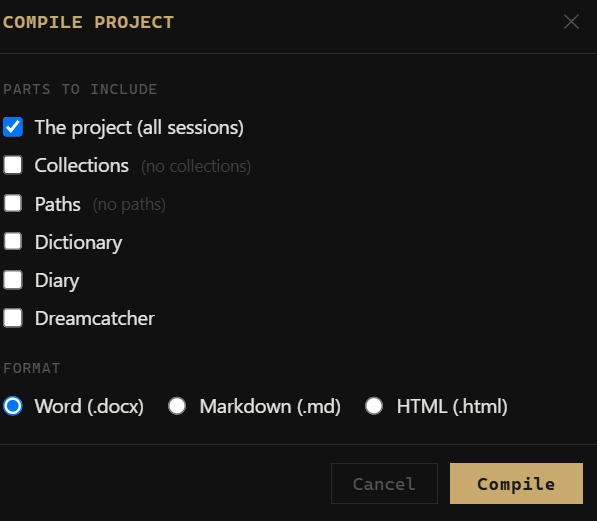
The compile modal replaces the direct export of /compile. Instead of generating the file immediately, it opens a panel where you choose exactly which parts to include and in what format.
COMPILE MODAL:
┌─────────────────────────────────────┐
│ Compile project [✕] │
├─────────────────────────────────────┤
│ Parts to include │
│ ☑ The project (all sessions) │
│ ☐ Collections │
│ ☑ Paths │
│ ☐ Dictionary │
│ ☐ Diary │
│ ☐ Dreamcatcher │
├─────────────────────────────────────┤
│ Format │
│ ◉ Word (.docx) │
│ ○ Markdown (.md) │
│ ○ HTML (.html) │
├─────────────────────────────────────┤
│ [Compile] │
└─────────────────────────────────────┘
Available parts
| Section | What it includes |
|---|---|
| The project | All the visible sessions in the Explorer's order |
| Collections | The project's saved searches |
| Paths | The project's narrative labyrinths (forks) |
| Dictionary | The project's living dictionary of #tags |
| Diary | All the entries of the personal Diary |
| Dreamcatcher | All the entries of the dream notebook |
Each section appears separated by a page break in the .docx, with its own title.
Format
| Format | Result |
|---|---|
| Word (.docx) | A single .docx file — clickable hyperlinks, ++anchor++ as bold+underline |
| Markdown (.md) | A .md file + an images/ folder next to it |
| HTML (.html) | A self-contained document — base64 images, no external dependencies |
HTML export
The generated HTML is a single file that works without a server or internet:
- Sidebar — a side table of contents with the project's sessions
- Hover popup — when you hover over an internal link (
[text](#anchor)), a window appears with a preview of the destination - Internal links —
[text](#anchor)navigates with a smooth scroll to the destination - External links —
[text](https://…)opens in a new tab with an ↗ indicator - Highlight —
==text==renders as<mark>(yellow background) - Anchors —
++text++generates a navigable marker with its ownid - Images — embedded as base64 directly in the HTML
- Dark theme — a dark-background editorial design
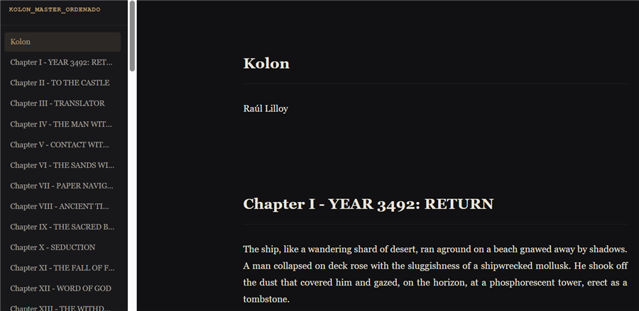
Reference
| Action | How |
|---|---|
| Open the modal | compile in the Terminal · /compile |
| Compile | Enter or the Compile button |
| Close without compiling | Esc |
Where files are saved
By default, Gombro opens the save dialog at Documents\Gombro. You can choose any other folder from that dialog.
Windows blocks saving to Documents
Windows has a security feature called Controlled folder access that protects Documents, Pictures and other folders from unauthorized writing. If an access error appears when compiling, there are two options:
Option A — Install Gombro from the Microsoft Store (recommended)
Apps installed from the Windows Store have automatic permissions to write to Documents. It requires no additional configuration.
→ Gombro on the Microsoft Store
Option B — Allow Gombro manually
If you installed Gombro from the website:
-
Open Windows Security (from the start menu or the shield icon in the taskbar)
-
Go to Virus & threat protection
-
Scroll down to Ransomware protection → click Manage ransomware protection
-
Turn on Controlled folder access if it isn't already on
-
Click Allow an app through Controlled folder access
-
Click + Add an allowed app → Recently blocked apps or Browse all apps
-
Navigate to
C:\Users\[your user]\AppData\Local\gombro-gui\gombro-gui.exeand select it
Gombro will then be able to save to Documents without restrictions.
27 — Backup and recovery
Gombro saves everything in a single SQLite file: gombro.db. A backup is simply a copy of that file. Recovering is replacing it with an earlier copy.
How it works
Automatic backup — every time you close Gombro, a backup is saved automatically. No configuration required.
Manual backup — type backup in the Terminal at any time to save an immediate snapshot.
Recovery — type recover in the Terminal to open the list of backups. Select one and click Restore selected.
Where they are saved
By default, backups go to a folder called backup_gombro next to the database file:
%AppData%\gombro\backup_gombro\
gombro-2026-04-29_10-00-00.db
gombro-2026-04-30_09-15-00.db
Change the folder
Open the recovery modal (recover) and click Change... — a native dialog opens to choose a folder. You can choose any folder: Dropbox, Google Drive, an external drive. The setting is saved and applies to all subsequent backups, including the automatic ones on close. You can change it at any time.
Backup rotation
Gombro keeps the 10 most recent backups. When a new one is created and that limit is exceeded, the oldest is automatically deleted.
Restore a backup
-
Type
recoverin the Terminal. -
Select a backup from the list.
-
Click Restore selected.
Gombro closes the database, replaces it with the chosen backup and reloads everything immediately. No need to restart.
Command reference
| Command | Action |
|---|---|
backup |
Save a snapshot now |
recover |
Open the backup list and restore |
28 — License and activation
Gombro is free to try for 60 days of use, after which you activate it with a license key. Activation is permanent: you do it once and it never expires.
How the trial period is counted
These are not 60 calendar days but 60 days of use: a day only counts if you actually opened the program. If you write on Tuesdays, your trial lasts well over a year. Days are not consumed while Gombro is closed.
The program is fully functional during the trial. Nothing is locked and nothing is watermarked — you can write an entire novel on the trial version if you want to.
Activating your license
Once the 60 days are used up, opening Gombro shows an expiry screen with an activation field:
-
Paste your license key into the Paste your license key… field.
-
Click Activate.
-
If the key is valid, the program unlocks immediately. No restart needed.
The key is stored in your database alongside the rest of your settings. Next time you open Gombro it verifies itself and never asks again.
Activation works offline
The key is cryptographically signed, and Gombro verifies it against a signature built into the program. That means it never contacts a server to activate: no internet connection required, no account to create, and none of your data is sent anywhere.
You can activate on a machine with no connection at all, and it will keep working even if it never goes online.
If the key doesn't work
The most common cause is a key that was only partly copied. When copying it from an email, make sure you take the whole thing: it's a long string with a dot in the middle and no spaces.
If you copied it in full and it still fails, the key isn't valid for this version. Write to me and we'll sort it out.
What happens to your writing
Nothing. Trial expiry doesn't touch your database: your projects, sessions and backups stay intact. If the trial runs out, the program locks but your texts are still there, waiting for activation.
That said, if you're going to let time pass before activating, run a backup (chapter 27) and keep the copy somewhere else. It's good practice regardless.
Keyboard shortcuts
| Shortcut | Action |
|---|---|
: or / |
Open the command Terminal |
Ctrl+T |
Open the floating command palette |
Ctrl+F |
Open floating search |
Ctrl+N |
New session (disabled in diary mode) |
Ctrl+D |
Open today's diary session |
Ctrl+O |
Dreamcatcher — open a new dream |
Ctrl+Q |
Schrödinger Mode — see paragraphs with quantum text |
Ctrl+K |
Kerouac Mode — see the whole project as a continuous document |
Ctrl+I |
Insert image |
Ctrl+Shift+T |
Insert table |
F4 |
Toggle the note post-it for the active session |
F1 |
Open help |
Esc |
Close Terminal → close search → activate Zen |
F2 |
Rename the selected session in the Explorer |
Delete |
Delete the selected session (or all multi-selected ones) |
↑ ↓ |
Navigate sessions in the Explorer |
Enter |
Open the selected session in the Explorer |
Ctrl+click |
Multi-select sessions in the Explorer |
Shift+click |
Select a range of sessions in the Explorer |
Recommended workflow
From a blank project to an exported draft — a suggestion, not a rule.
Phase 1 — Open the instrument
create project Don Quixote
new La Mancha
Write until the session is ready, then create another. Don't organize yet.
Phase 2 — Let chance work
Choose a paragraph that feels stuck. Right-click → Shuffle. Keep what surprised you. Undo what didn't work. Use Sentence Mode to slow down.
Phase 3 — Tag and map
Tag recurring elements. Open the Graph, build a visual map of connections.
Phase 4 — Search and collect
Search for elements to track. Save the most useful searches as Collections. Use Paragraph Versions to compare and restore.
Phase 5 — Read the whole manuscript
Activate Kerouac Mode (Ctrl+K) to see all the sessions as a continuous document. Review the narrative flow, edit from the perspective of the whole.
Phase 6 — Export
Order the sessions in the Explorer the way you want them to appear in the document. Then:
compile Don Quixote — First Draft
Open the .docx for the final formatting and delivery.
Star features ★
| Feature | Chapter |
|---|---|
| ★ Command terminal | 4 |
| ★ Sentence Mode — split by sentences | 3 |
| ★ Search and Collections | 16 |
| ★ A graph view of my book | 18 |
| ★ Shuffle and cut-up | 12 |
| ★ Borges Algebra | 10 |
| ★ Schrödinger Mode | 19 |
| ★ Paths (narrative labyrinths) | 11 |
| ★ Compile Modal | 26 |
| ★ Extractive summary | 20 |
| ★ Kerouac Mode | 21 |
| ★ HTML export | 26 |
| ★ Hourly writing plan | 9 |
About me, Gombro's fabulist
When I was born they named me Raúl Lilloy Alonso, in the place called Alvear, south of Aconcagua, and 500 meters from the Atuel River (present in my novel Vorg). At the age of 5, because of unfortunate money decisions, my father takes us to Mendoza.
To be brief: I studied political science, I graduated from two universities: Uncuyo and the Complutense of Madri(d). I did, or they did to me, two postgraduate degrees: (mis)Education in Almería and Urban Planning in Szczecin, Poland, where I wrote my novel Kolon (with or without an accent).
I'll go on, I'm almost done: I was a militant in the seventies and was expelled from (a)political Sciences; after 8 years of mental exile, I graduated as a politocrat, was a university researcher, a professor of criminalistics (and punishment), and I set up a writing workshop with Raúl Silanes, first at Rajatablas and later, at incubook.com, a workshop on how to write a book in 30 days — which good sense stretched to 9 months.
Raúl Silanes and Raúl Lilloy at the "Rajatabla" workshop (Mendoza newspaper, March 14, 1983).
For about four months now I've been working on Gombro, and I hope it abandons me into the hands of literary barbarism, where I belong.

Alphabetical index
| Concept / Action | How | Chapter |
|---|---|---|
Anchor / Title (++) |
⚓ button or ++text++ |
3 |
| Backup / Recovery | backup · recover |
27 |
| Borges Algebra | Select text → right-click → Add variant | 10 |
| Borges — export to DOCX | Compile → .docx — variants as a typographic brace |
10 |
| Borges — insert | Right-click → Insert | 10 |
| Collections | Search → + Save as collection | 16 |
| Command terminal | : or / |
4 |
| Compile / Export | compile → opens a modal with a checklist of parts |
25, 26 |
| Compile to HTML | Compile modal → HTML format → saves a self-contained .html |
26 |
| Create project | create project <name> |
2 |
| Diary | diary · Ctrl+D |
6 |
| Doubt — confirm | Right-click on marked text → Confirm | 14 |
| Doubt — mark text | Select → right-click → Doubt | 14 |
| Dreamcatcher — from a note | F4 → write with #sueños or #dreams |
7 |
| Dreamcatcher — new dream | Ctrl+O · /dreams |
7 |
| Explorer — accordion | Click a session → expands paragraphs · click another → closes the previous | 5 |
| Formatting bar | B/I/S/H/🔗/⚓/ⁿ buttons on the editor's top bar | 3 |
| Graph — multi-selection | Ctrl+click on nodes |
18 |
| Graph — search | Graph search bar | 18 |
| Graph of sessions | Explorer → GRAPH tab | 18 |
| Hashtag — Explorer filter | Click the hashtag tag in the Explorer | 17 |
| Hashtags | Right-click on paragraph → # (hashtag panel) | 17 |
| Help | help · F1 |
— |
| Highlight | Select → H button or ==text== |
3 |
| Image — insert | Ctrl+I |
24 |
| Image — resize | Click the image | 24 |
| Import a file | ↑ (Explorer header) — .md / .docx / .txt | 25 |
| Kerouac — activate | Ctrl+K · ≡ menu → Kerouac Mode |
21 |
| Kerouac Mode | Ctrl+K |
21 |
| Notes (project) | F4 · right-click session → Annotate session |
8 |
| Obsidian — sync | /obsidian |
23 |
| Paragraph — versions | Right-click on paragraph → Versions | 13 |
| Paragraphs — add below | Right-click paragraph (outline) → Add paragraph below | 5 |
| Paragraphs — navigate | Click a paragraph in the outline → cursor in the editor | 5 |
| Paragraphs — reorder | Drag a paragraph in the outline and drop | 5 |
| Paths — create | Right-click on paragraph → 🌿 Branch a path from here | 11 |
| Projects — list | open · view projects |
5 |
| Reveal session in Explorer | Right-click on paragraph → Reveal in Filer | 5 |
| Schrödinger Mode | schrodinger · Ctrl+Q |
19 |
| Search | search <term> · Ctrl+F |
16 |
| Search in sentences | search <term> in sentences |
16 |
| Sentence mode | sentence mode |
3 |
| Session indicators | Right-click session → Annotate session | 22 |
| Sessions — multi-selection | Ctrl+click on sessions |
5 |
| Sessions — new | new [name] · Ctrl+N |
5 |
| Sessions — new below | Right-click session → Add session below | 5 |
| Sessions — reorder | Right-click → Move up / down · Drag and drop | 5 |
| Sheet width | Slider on the editor's top bar | 3 |
| Shuffle (cut-up) | Right-click on paragraph → Shuffle | 12 |
| Shuffle all sentences | shuffle |
12 |
| Summary — algorithm | Classic / TextRank buttons | 20 |
| Summary — change percentage | 10% / 20% / 30% / 50% buttons in the panel | 20 |
| Summary — individual session | /summarize in the Terminal |
20 |
| Summary — project view | Click ◈ in the Explorer | 20 |
| Tables — insert | Ctrl+Shift+T |
15 |
| Text scale | /scale [50–300] |
3 |
| Writing plan | plan |
9 |
| Zen mode | zen |
3 |